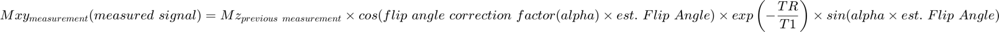
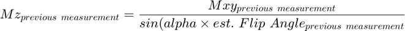
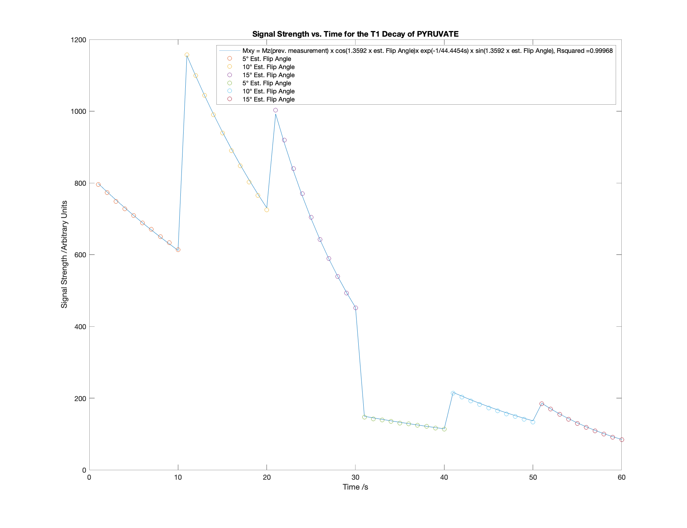
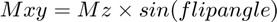
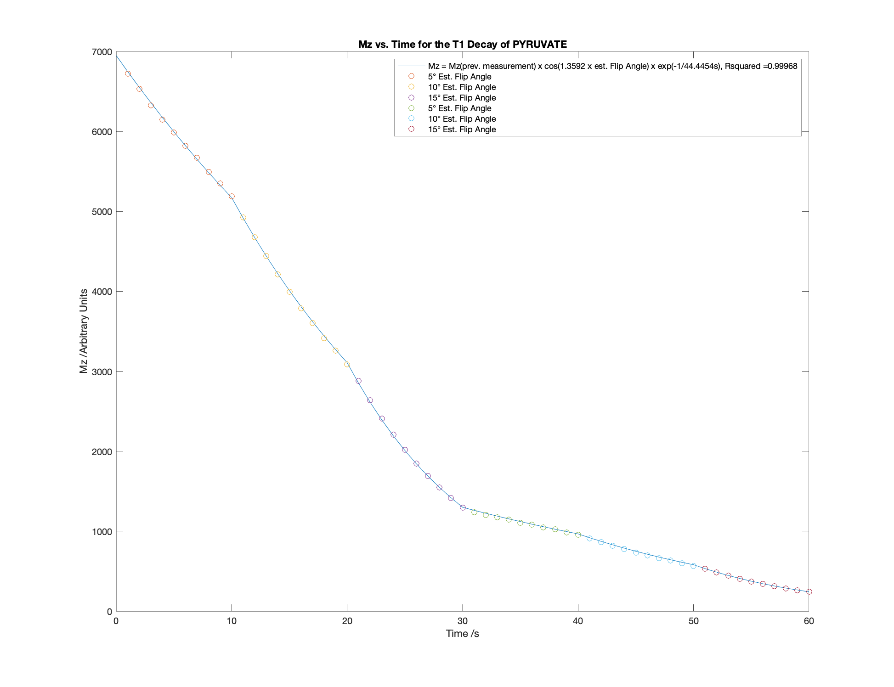

Generating Plots Showing Signal Strength as a Function of Flip Angle and T1 Decay and Showing Decay of Hyperpolarisation
Contents
Two plots are generated for each quantified peak. One plot shows the signal strength as a function of time (T1 decay) and the flip angles used to generate each measurement. The other plot shows Mz (hyperpolarisation) as a function of flip angles used at each measurement and time (T1 decay)
Inputs
procpar: is the procpar file for the experiment, which is used to find the flip angles, repetition times (TRs) and times each measurement was taken
inp: is 'A' if the data was quantified using AMARES from JMRUI, or it should be 'M' if the data was quantified using integration in MestReNova and the data is a custom .csv integral file
coilnum: should only be entered if inp is 'M'. It is the number of coils used to collect the data.
field: should only be entered if inp is 'M'. It is a cell containing the names of the peaks that have been quantified
Outputs
Scatter plot of raw data with fitted curve used to predict the T1 decay constant
Scatter plot of Mz vs. Time with the fitted curve (NB Mz is calculated using the flip angles in the procpar file and flip angle correction factor alpha)
Child Functions
T1DecayCalc: calculates the T1, M0 and alpha constants for each peak. It also calculates the fit of the model to the data and parses the raw data files into a readible format
T1DecayFunction: calculates the signal strength values from the model using inputted T1, M0 and alpha parameters as well as the times and flip angles used
T1DecayFunctionMz: calculates the Mz values from the model using inputted T1, M0 and alpha parameters as well as the times and flip angles used
function graphT1Decay(proc,inp,dat,coilnum,field)
Calculating Parameters of the Fitted Decay Curve
T1 is the relaxation constant of the hyperpolarisation returning to thermal equilibrium. M0 is the initial total magnetisation in arbitrary units (amount of hyperpolarisation). alpha is the flip angle correction factor applied to all flip angles in the flip1 parameter in the procpar file. CODs is the coefficients of determinations of the fit of the model to the data. data is an array containing the raw data and estimated flip angles. peaknames is a cell containing the names of each peak quantified. secinds and secvals are arrays containing the indices where the estimated flip angle is changed and what the estimated flip angles are for each part of the data set respectively
if nargin >= 5 [T1,M0,alpha,CODs,data,peaknames,secinds,secvals] = T1DecayCalc(proc,inp,dat,coilnum,field); TR = TRfromProcpar(proc); elseif nargin >= 4 [T1,M0,alpha,CODs,data,peaknames,secinds,secvals] = T1DecayCalc(proc,inp,dat,coilnum); TR = TRfromProcpar(proc); elseif nargin >= 3 [T1,M0,alpha,CODs,data,peaknames,secinds,secvals] = T1DecayCalc(proc,inp,dat); TR = TRfromProcpar(proc); elseif nargin >= 2 [T1,M0,alpha,CODs,data,peaknames,secinds,secvals] = T1DecayCalc(proc,inp); TR = TRfromProcpar(proc); elseif nargin >= 1 [T1,M0,alpha,CODs,data,peaknames,secinds,secvals] = T1DecayCalc(proc); TR = TRfromProcpar(proc); else proc = readprocpar; [T1,M0,alpha,CODs,data,peaknames,secinds,secvals] = T1DecayCalc(proc); TR = TRfromProcpar(proc); end if length(secinds) < 2 disp('Not enough flip angles were used to calculate decay parameters') return end
Local minimum possible.
lsqcurvefit stopped because the final change in the sum of squares relative to
its initial value is less than the value of the function tolerance.
'Error: Cannot evaluate T1 for data from the peak corresponding to PYRUVATE_HYDRATE'
Plotting the Raw Data and Overlaying the Fitted Curve
The fitted curve obeys the following relation: 
Mz of the previous measurement is calculated with the following:

The Mz of the first measurement is M0
Each part of the data set that was collected using a different estimated flip angle is plotted with a different colour, which is shown on the legend
for el = 1:length(peaknames) figure('Position',[0 0 600 450]) fitfun = T1DecayFunction([M0(el) alpha(el) T1(el)],data(:,1:2)); if length(TR) == 1 equ = strcat("Mxy = Mz(prev. measurement) x cos(",num2str(alpha(el)),{' '},'x est. Flip Angle)',... 'x exp(-',num2str(TR),'/',num2str(T1(el)),'s)',{' '}, 'x sin(',num2str(alpha(el)),{' '},'x est. Flip Angle)',{', '},'Rsquared = ',num2str(CODs(el))); else equ = strcat("Mxy = Mz(prev. measurement) x cos(",num2str(alpha(el)),{' '},'x est. Flip Angle)',... 'x exp(-TR/',num2str(T1(el)),'s)',{' '}, 'x sin(',num2str(alpha(el)),{' '},'x est. Flip Angle)',{', '},'Rsquared = ',num2str(CODs(el))); end plot(data(:,1),fitfun) hold on Legend = cell(length(secinds)+1,1); Legend{1} = equ; for ele = 1:length(secinds) if ele == length(secinds) scatter(data(secinds(ele):end,1),data(secinds(ele):end,el+2)) else scatter(data(secinds(ele):secinds(ele+1)-1,1),data(secinds(ele):secinds(ele+1)-1,el+2)) end legent = strcat(num2str(secvals(ele)),"° Est. Flip Angle"); Legend{ele+1} = legent; end xlabel('Time /s') ylabel('Signal Strength /Arbitrary Units') title(strcat("Signal Strength vs. Time for the T1 Decay of",{' '},peaknames{el})) legend(Legend) end
Plotting Mz at Each Measurement and the Fitted Curve
The fitted equation is the same as above except the equation does not have the last sin term since:

for el = 1:length(peaknames) figure('Position',[0 0 600 450]) fitfun = T1DecayFunctionMz([M0(el) alpha(el) T1(el)],data(:,1:2)); y = [M0(el);fitfun]; x = [0;data(:,1)]; if length(TR) == 1 equ = strcat("Mz = Mz(prev. measurement) x cos(",num2str(alpha(el)),{' '},'x est. Flip Angle) x exp(-',num2str(TR),'/',num2str(T1(el)),'s)',{', '},'Rsquared = ',num2str(CODs(el))); else equ = strcat("Mz = Mz(prev. measurement) x cos(",num2str(alpha(el)),{' '},'x est. Flip Angle) x exp(-TR/',num2str(T1(el)),'s)',{', '},'Rsquared = ',num2str(CODs(el))); end plot(x,y) hold on Legend = cell(length(secinds)+1,1); Legend{1} = equ; data(:,el+2) = data(:,el+2)./sind(data(:,2).*alpha(el)); for ele = 1:length(secinds) if ele == length(secinds) scatter(data(secinds(ele):end,1),data(secinds(ele):end,el+2)) else scatter(data(secinds(ele):secinds(ele+1)-1,1),data(secinds(ele):secinds(ele+1)-1,el+2)) end legent = strcat(num2str(secvals(ele)),"° Est. Flip Angle"); Legend{ele+1} = legent; end xlabel('Time /s') ylabel('Mz /Arbitrary Units') title(strcat("Mz vs. Time for the T1 Decay of",{' '},peaknames{el})) legend(Legend) end
end
Notes
The inputs used in the example were:
proc: 'procpar28_11_19_Dissolution'
inp: 'A'
dat: {'Decay_Dissolution_28_11_19_even.txt', 'Decay_Dissolution_28_11_19_odd.txt'}
The example was run by putting:
graphT1Decay('procpar28_11_19_Dissolution','A', {'Decay_Dissolution_28_11_19_even.txt', 'Decay_Dissolution_28_11_19_odd.txt'})
into the command window